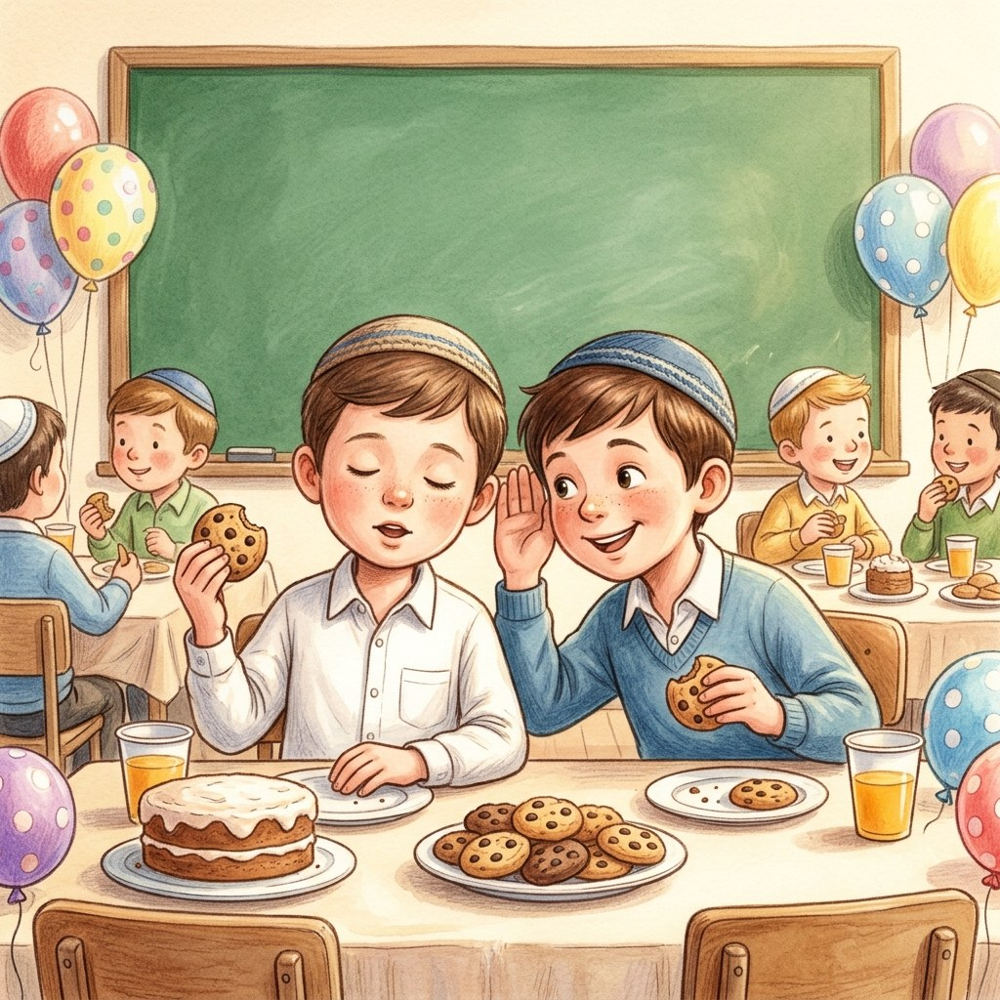

I've Got a Clue!
Can a Friend's Bracha Count for Me?
About this episode: At a class party Yedani hears Shmulik make a bracha on his cookie, and thinks that now he can eat without a bracha of his own. The Rav stops him just before the bite and explains: when does someone else's bracha count for us, the four details we need to know, and what is special about the bracha after eating.
0:00
--:--
We couldn't load the recording. Check your internet connection and try again.